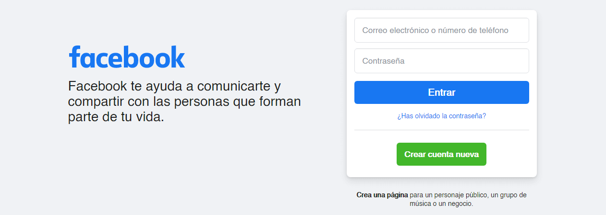

Guía básica de la web
A continuación los significados de algunos de los términos más utilizados dentro del mundo del desarrollo web:
- World Wide Web
- La web es un conjunto de documentos conectados a través de hipervínculos, a los que se puede acceder a través de un navegador web por medio de la internet.
- Internet
- Es un grupo de redes de comunicación conectadas entre sí, que se extienden por todo el mundo.
- Página web
- Es un documento en la web, que contiene información. Esta información puede ser texto, imágenes, video, hipervínculos, etc.
- Sitio web
- Es una agrupación de páginas web que se encuentran en un mismo dominio o subdominio.
- Aplicación web
- Una aplicación o app (del inglés application) web, es un software al cual se puede acceder por medio de un servidor web, y en el que se pueden utilizar herramientas sin necesidad de salir del navegador, o de contar con un sistema operativo específico.
Un claro ejemplo de esto es Facebook:

Están hechos a partir de lenguajes informáticos, que nos permiten realizar diferentes cosas dentro de un navegador web o intérprete de lenguajes web.
Los lenguajes esenciales para cualquier página web en la actualidad son:
- HTML
- De sus siglas "HyperText Markup Language" o en español "Lenguaje de marcado de hipertextos", es un lenguaje de marcado utilizado para la creación de páginas web, especializándose en la estructura de las mismas.
- CSS
- "Cascading Style Sheet" u "Hoja de estilos en cascada" es un lenguaje de diseño gráfico que permite personalizar la interfaz gráfica de una página o aplicación web, dándole colores, formas, animaciones, etc.
- JS
- JavaScript, que no se debe confundir con Java, es un lenguaje de programación, que nos permite dar lógica y dinamismo a las páginas web.
Actualmente, gracias a la evolución de ECMAScript y a otras herramientas, se pueden hacer aplicaciones tanto del lado del cliente como del lado del servidor.
La web se separa principalmente por dos ramas o secciones, éstas son Cliente y Servidor, normalmente denominadas Front-end y Back-end.
- Front-end
- El front-end es todo aquello que se emplea dentro de la interfaz de usuario, y que permite interactuar con el mismo.
- Back-end
- El back-end es lo que sucede detrás, es lo que le entrega datos, ya sean de una base de datos, de un archivo en el almacenamiento del servidor, etc., al lado del cliente.
Los lenguajes pueden variar según la época o moda, sin embargo, los lenguajes esenciales están estandarizados.
Acá algunos ejemplos:
- Front-end
- HTML
- CSS
- JavaScript
- WebAssembly
- Back-end
- JavaScript con NodeJS
- Python
- PHP
- Golang
- Ruby
- Java
Para publicar una página web, un sitio web, o una aplicación web, se utilizan principalmente dos cosas:
Resumiendo las definiciones de estos términos:
Un dominio es básicamente una traducción de una dirección IP a un nombre único legible por el humano.
Mientras que un hosting o almacenamiento web, es un lugar o servidor en donde podemos desplegar o subir archivos y conectarlos con un dominio, al cual se podría ingresar desde un navegador web y visualizar los documentos que hayamos subido y permitido ver.